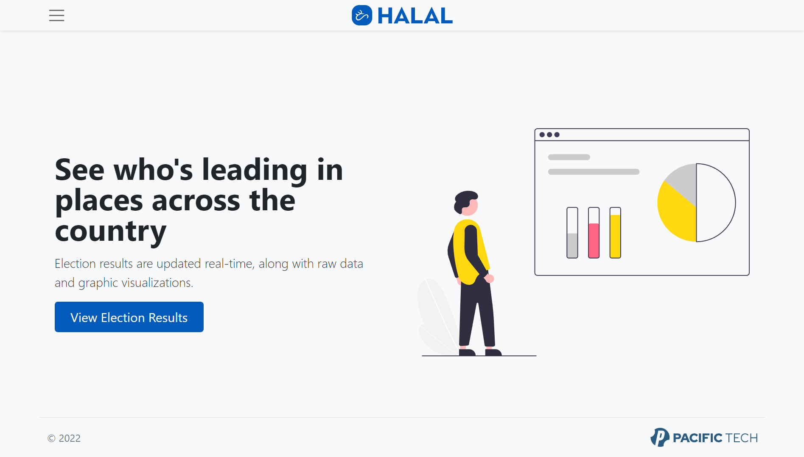
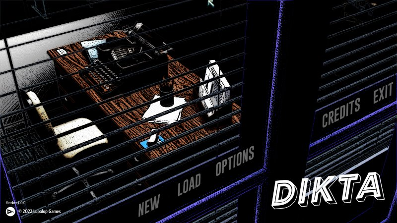
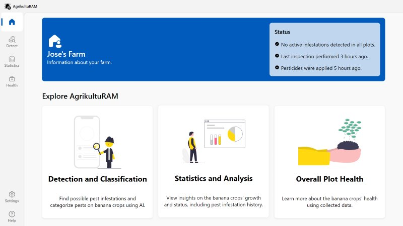

Featured Photo
Projects

Investigative Point and Click Adventure Game
Technologies: Python, Pygame
Dikta
May 2022 – June 2022Investigative Point and Click Adventure Game
Technologies: Python, Pygame

Interactive Front-end for Banana Plantation Pest Management
Technologies: HTML, CSS, JS
AgrikultuRAM
May 2022Interactive Front-end for Banana Plantation Pest Management
Technologies: HTML, CSS, JS
Halal (aka Project Elections)
February 2022 – March 2022Customizable voting/polling system
Technologies: Java/Jakarta EE, HTML, CSS, JS, MySQL
Skills
UX/UI Design; Wireframing; Prototyping; Project Management; Product Management; Leadership
Tech: Desktop application development in C#, Java; Web development in HTML/CSS/JavaScript, PHP, SQL, and Jakarta EE; Python; C/C++
Tools: Adobe Creative Suite; Microsoft Office; Microsoft Teams; Microsoft Visual Studio; Microsoft Expression Design; Eclipse; MySQL; MonoGame/XNA; GCC/Clang; Git; Gitea/Forgejo; OBS Studio; VMWare Workstation
Autobiography
I'm Francis Dominic Fajardo, a BS Computer Science student at the University of the Philippines - Los Baños.
I have been interested in programming since I first used our old family computer as a kid. I am also a fan of Filipino writing and poetry, RPGs, strategy and simulation games, and retro gaming. I occasionally post about some of those topics in my blog, Saligsig.
I have been interested in programming since I first used our old family computer as a kid. I am also a fan of Filipino writing and poetry, RPGs, strategy and simulation games, and retro gaming. I occasionally post about some of those topics in my blog, Saligsig.